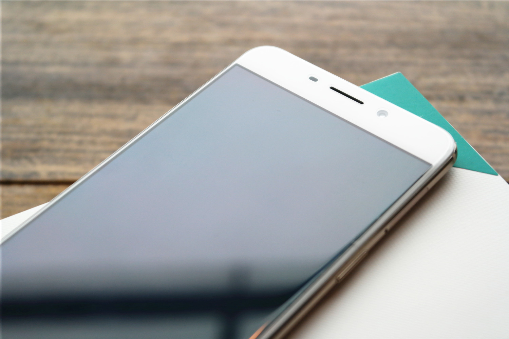
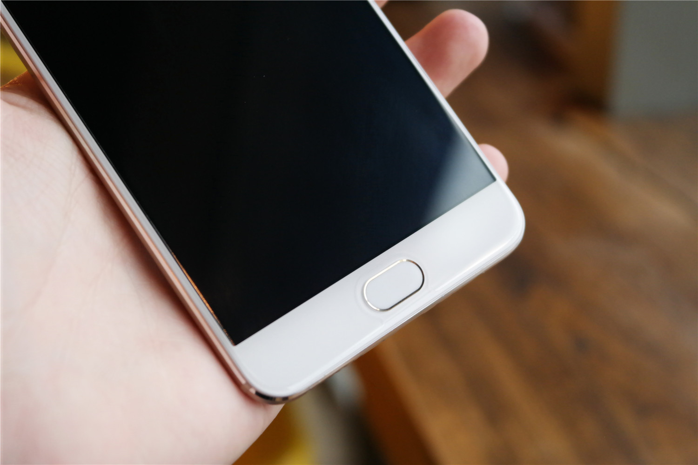
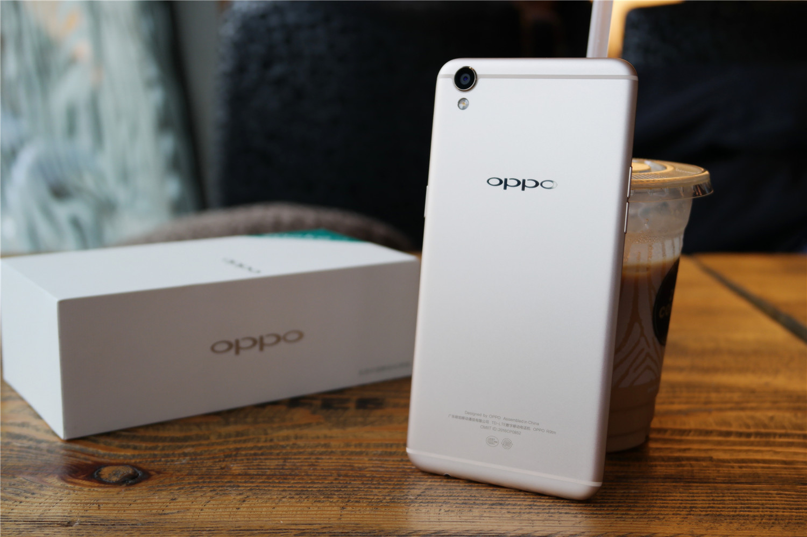
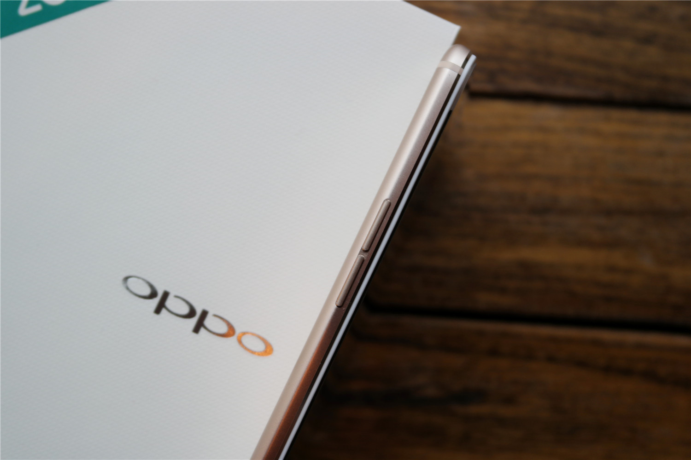
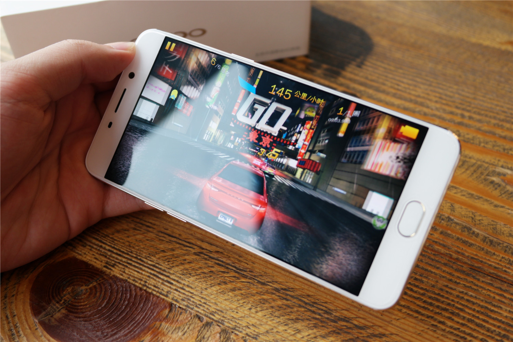
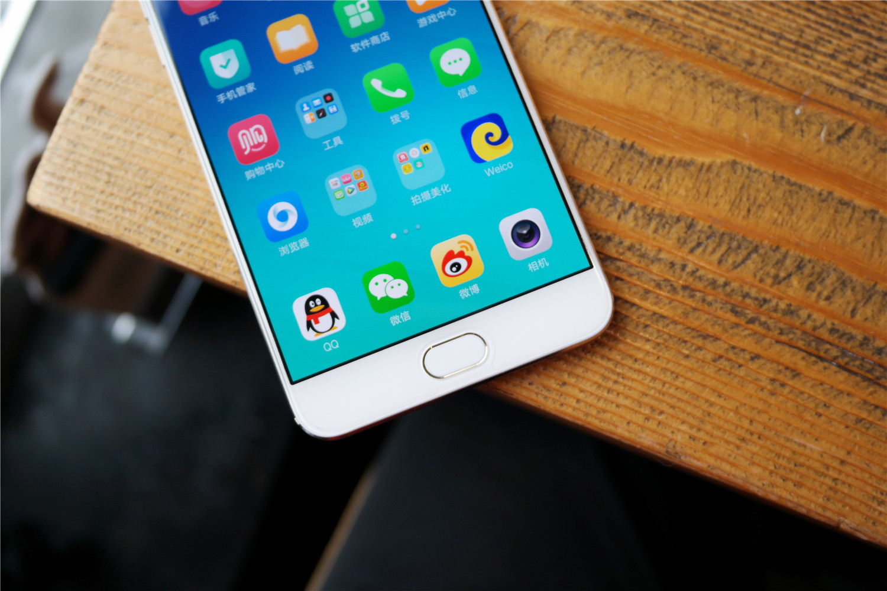
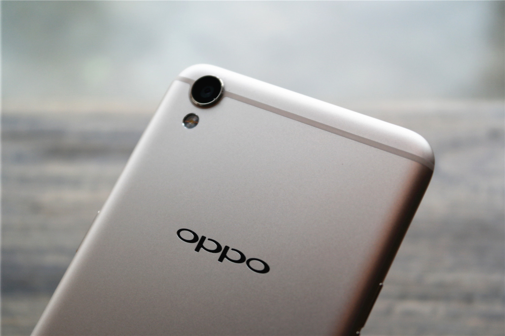

OPPO R9 Review

The original review is in CHINESE. This is a translated version by GOOGLE TRANSLATE.
OPPO R7 series is undoubtedly one of the pride of OPPO, the market's sales proved its success. After R7, how to extend the success of the R series, has become a new topic OPPO. R9 as another masterpiece of the R series, whether the performance beyond the predecessor, which has inheritance and change it? After reading my share, I believe you can have your own answer.

R9 positive visual impact is certainly the most ultra-narrow frame, including the width of the black side is only 1.66mm, bright screen and interest screen as beautiful. There will not be the kind of "interest-screen picturesque, bright screen can Happy Valley" situation. OPPO mentioned at the press conference, R9 in the screen design and frame design double upgrade, only to reach the ultra-narrow border shock effect.

R9's screen, although using a 2.5D radian glass design, but because the screen and the border between the plastic laminated layer. So in the actual experience, the arc of the feelings are not obvious. The role of plastic sandwich is to increase the strength of the machine, reducing the risk of broken screen when falling, but will therefore affect the feel. I personally tend to OPPO such a more pragmatic approach, because the complexity of the use of mobile phones in the scene, the intensity is very important.

R9 is the first positive identification of mobile phones, key design Meizu resembles the "waist button", once caused a lot of controversy. I personally respected the positive fingerprint identification, because more convenient, more extensive use of the scene. Such as when the phone flat on the desktop thing, you can more easily unlock. The actual experience of fingerprint recognition keys, we talk about later. However, the Home key of this touch is really not boast. Press down there will be a clear sound, feel jerky, it is very cheap. Somewhat similar to the year MX5 feeling.

R9 uses a one-piece metal design, the back of the injection antenna is divided into three sections of the design, fine sandblasting moist, feel good. It is worth mentioning that, R9 on the back of the plastic injection antenna around the camera in a half circle, with the iPhone's handling a slight difference. But the "leucorrhea" nature is still not changed, like it or not a matter of opinion.

At the press conference, OPPO put forward the concept of "condensed waist", that is, mobile phone at any angle, the light and shadow always stay on the border. The actual experience, can feel the R9 in the box there is a feeling of Ambilight, in the light of the irradiation is particularly bright, holding in his hand like a work of art.

Hardware, R9 MediaTek Helio P10 processor with a combination of 4GB Ram, is still "pragmatism." The actual experience, P10 performance is sufficient to ensure stable operation of the system, 4GB storage allows multi-task switching is more smooth. Many people will be curious about the difference between X10 and P10, here to talk about. First of all, the performance, X10 is completely hanging P10, although the same as the eight A53 core, but the maximum frequency of X10 reached 2.2Ghz, which also brings higher power consumption. So the lower frequency P10 will be more power. In addition, P10 in network support is also better than the X10, P10 supports the whole Netcom and 4G +, which is not supported.

R9 is the first OPPO fingerprint recognition using a positive phone, and known as 0.2 seconds to quickly unlock. The actual experience, R9 fingerprint recognition speed is indeed fast. Off screen state, almost in the moment press the home button on the unlock, there is no cut animation, very impressive. Bright screen state, the fingers only need to touch the home button on the light, you can identify and unlock, do not need to stay in the home button for a while to unlock. In addition, through my comparison, it's fingerprint recognition speed than iPhone6s (not including animation), Xplay5 even faster.
"Charging five minutes, two hours of call," this ad can be described as deeply rooted, VOOC flash charge has also been one of OPPO's killer. The R9 naturally comes standard with a VOOC flash charging head + data cable. Although the VOOC interface is specially customized, but the data line is still compatible with other micro-usb phone, the same, use the micro-usb data cable can also charge for the R9, but the speed will be slightly slower. R9 is attached to the following charging speed test data.
In addition, because the VOOC flash charge using a low-voltage charging program, R9 in the charging of small heat, even while charging side use, it will not appear particularly hot situation. In general, VOOC flash compatibility, high heat, small, fast, but also very portable, can be said to be the best flash charge solution.

Like other OPPO phones, R9 is not a cost-effective to win the product. R9 has no "bunker" hardware configuration, but it has a beautiful narrow border, delicate metal touch, practical fingerprint recognition, excellent image quality (front and rear) and smooth system experience. Although you may find it slightly dull, but for ordinary consumers, these features enough to impress them pay for the phone. I personally have been very appreciate the concept of OPPO products and spirit, it is the kind of a consistent focus and serious, so that OPPO in many Internet brands stand out and be successful.
Overall Evaluation
Design
Screen
Operating System
Camera
Battery
Summary
Comments